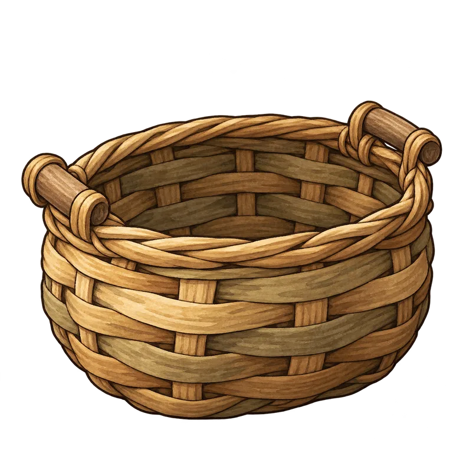
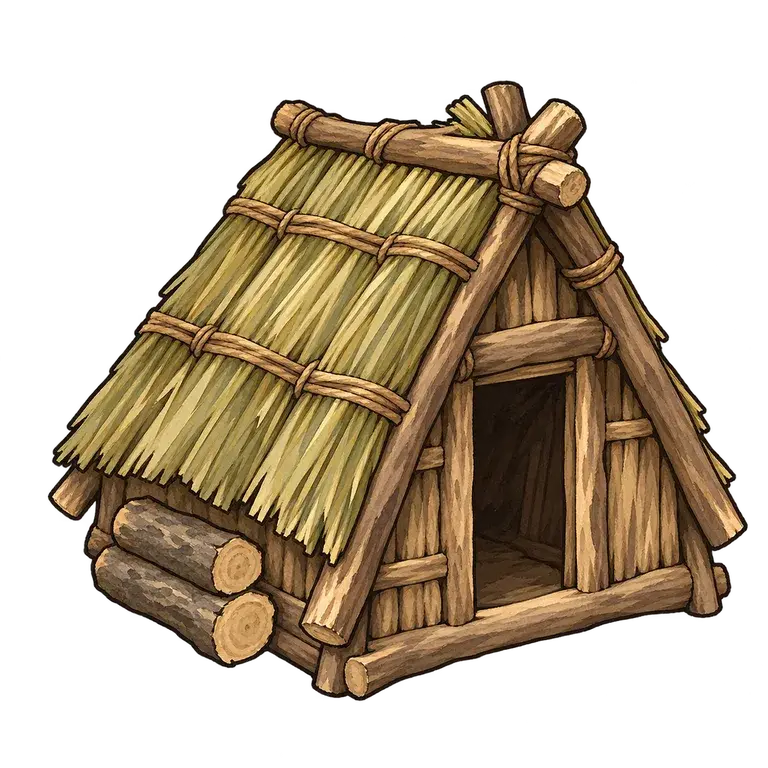

ÉCLAT Le Carnet du Semeur
Une fabrication du Carnet

Panier tressé
Double ta récolte à la main dans la Lisière.
Enfin de quoi porter plus que deux mains pleines.
ÉCLAT Le Carnet du Semeur
Ouvrage achevé

Le premier abri
Une cabane fabriquée.
Un abri de branches où s’entasse ta cueillette.